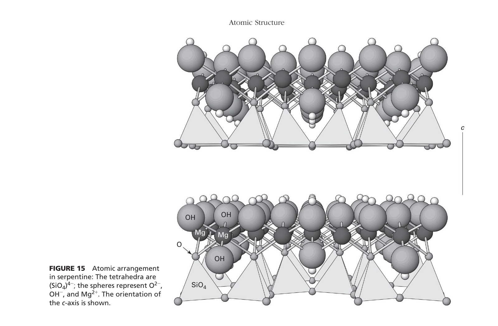

Crystal Chemistry of Muscovite: The structural formula of muscovite is $\text{K}\text{Al}_2[\text{AlSi}_3\text{O}_{10}](\text{OH})_2$:
This describes pyrophyllite ($\text{Al}_2\text{Si}_4\text{O}_{10}(\text{OH})_2$). In pyrophyllite, all tetrahedral sites are occupied by $\text{Si}^{4+}$ without substitution, leaving the t-o-t layers electrically neutral. As a result, no interlayer cations exist; the t-o-t sheets are held together strictly by weak van der Waals forces, making pyrophyllite very soft (hardness 1–2).
This describes the trioctahedral micas—namely biotite ($\text{K}(\text{Mg},\text{Fe})_3[\text{AlSi}_3\text{O}_{10}](\text{OH})_2$) and phlogopite ($\text{K}\text{Mg}_3[\text{AlSi}_3\text{O}_{10}](\text{OH})_2$). Because they contain divalent cations ($\text{Mg}^{2+}, \text{Fe}^{2+}$), all 3 out of 3 octahedral sites are occupied ($3/3 \equiv$ trioctahedral).
This describes kaolinite ($\text{Al}_2\text{Si}_2\text{O}_5(\text{OH})_4$), a 1:1 clay mineral consisting of alternating single tetrahedral ($t$) and single octahedral ($o$) sheets without interlayer cations.
| Layer Type | Octahedral Character | Interlayer Contents | Diagnostic Mineral | Chemical Formula |
|---|---|---|---|---|
| 1:1 (t-o) | Dioctahedral ($\text{Al}^{3+}$ in 2/3 sites) | None (Hydrogen bonding) | Kaolinite | $\text{Al}_2\text{Si}_2\text{O}_5(\text{OH})_4$ |
| Trioctahedral ($\text{Mg}^{2+}$ in 3/3 sites) | None (Hydrogen bonding) | Serpentine (Antigorite/Chrysotile) | $\text{Mg}_3\text{Si}_2\text{O}_5(\text{OH})_4$ | |
| 2:1 (t-o-t) | Dioctahedral ($\text{Al}^{3+}$ in 2/3 sites) | None (Van der Waals bonds) | Pyrophyllite | $\text{Al}_2\text{Si}_4\text{O}_{10}(\text{OH})_2$ |
| Trioctahedral ($\text{Mg}^{2+}$ in 3/3 sites) | None (Van der Waals bonds) | Talc | $\text{Mg}_3\text{Si}_4\text{O}_{10}(\text{OH})_2$ | |
| Dioctahedral ($\text{Al}^{3+}$ in 2/3 sites) | Interlayer Cation ($\text{K}^+$) | Muscovite (True White Mica) | $\text{K}\text{Al}_2[\text{AlSi}_3\text{O}_{10}](\text{OH})_2$ | |
| Trioctahedral ($\text{Mg}^{2+}/\text{Fe}^{2+}$ in 3/3 sites) | Interlayer Cation ($\text{K}^+$) | Phlogopite / Biotite | $\text{K}(\text{Mg},\text{Fe})_3[\text{AlSi}_3\text{O}_{10}](\text{OH})_2$ | |
| 2:1:1 (t-o-t + o) | Trioctahedral / Dioctahedral | Interlayer brucite-like octahedral sheet | Chlorite group | $(\text{Mg},\text{Fe})_5\text{Al}(\text{AlSi}_3\text{O}_{10})(\text{OH})_8$ |